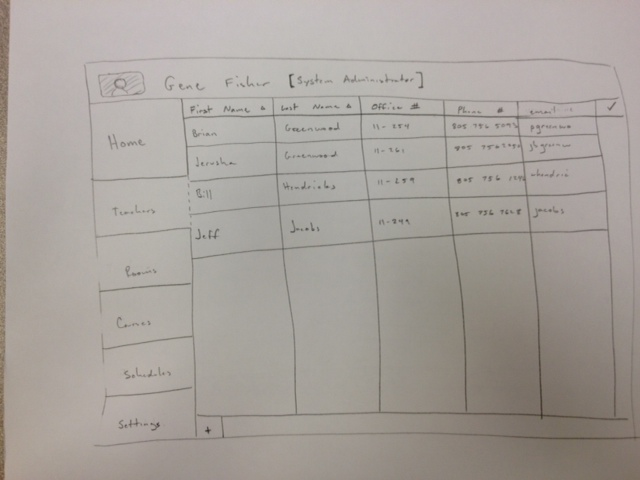

Add / Edit Instructor Preferences
Old Versions:
version 1
2.1.5 User Interface Overview
Adding a Professor
This is a view that is available only to a system admin. It will allow the user to see all
of the teachers, and their related info. Each column may be sorted in alpabetical order. The columns
on the left have different views of data: professors, rooms, and courses. This will be the
primary way of viewing teachers in the database.

Figure 2. Teacher Tab
When you click the "+" button on the bottom, a new dialogue pops up to add a teacher (figure 3).
Figure 3. Add Teacher Pop Up Dialogue
- First Name - Text field for teachers first name.
- Last Name - Text field for teachers last name.
- Middlie Initial - Text field for teachers middle initial.
- Phone Number - Text field for teachers phone number.
- Email - Text field for teachers email, must be valid cal poly email.
- Picture - Select a file from computer to upload for teachers picture. (figure 5)
- Department - Drop down menu of all available departments to choose from. (figure 4)
- The "cancel" button will cancel this whole operation.
- The "reset" button will clear all of the input fields.
- The "Add Teacher" button will add the teacher to the list of teachers.
Figure 4. Drop down menu of all the possible departments a teacher can belong to.
The drop down menu is useful for limiting the values that can be plugged into the text field. These
will be pre-populated with values we give them.
Figure 5. Pop up that brings up a file system viewer to select image to upload
Prev: [none]
| Next: Your
section 2.2
| Up: functional
| Top: index
{kind=link}
{kind=link}
{kind=link}
{kind=link}